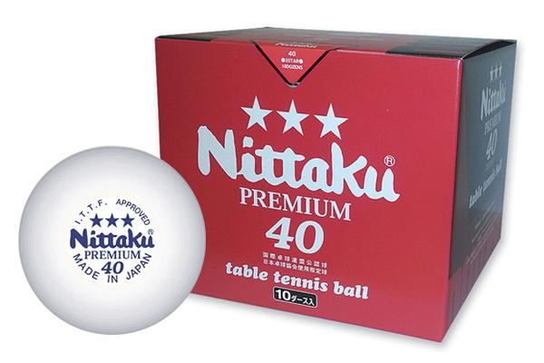
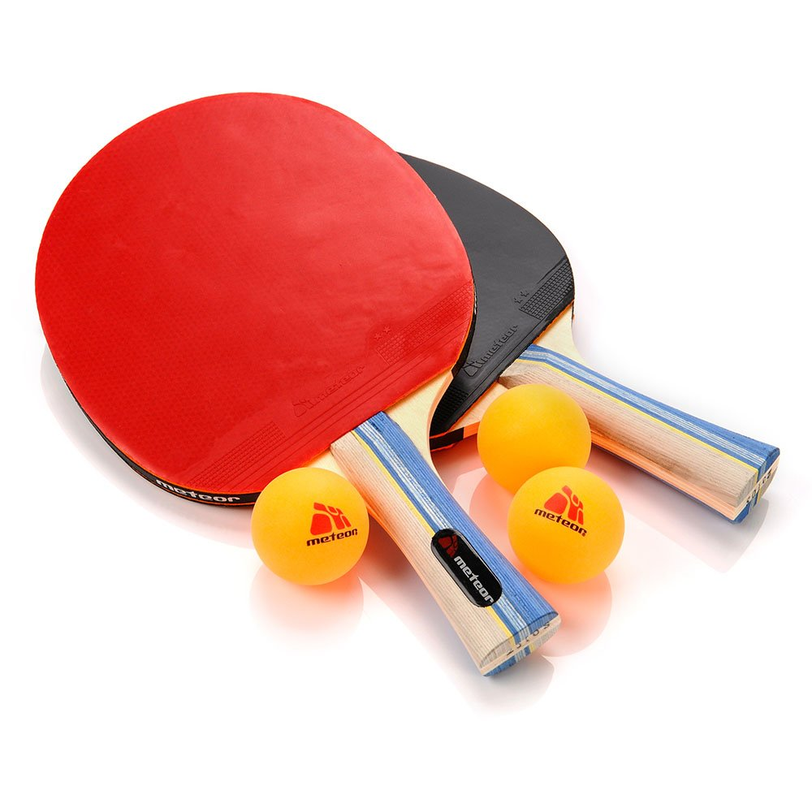
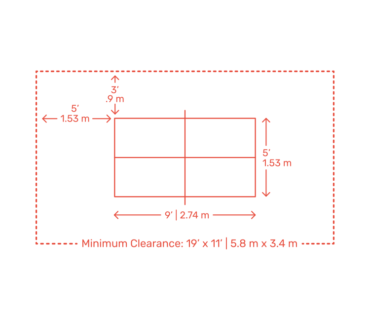
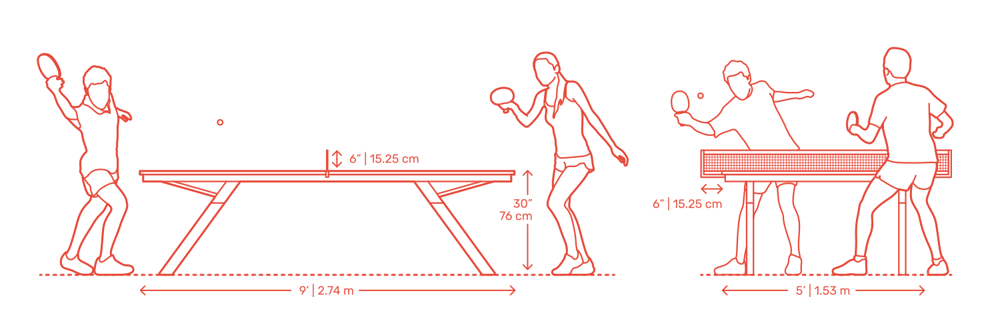

Table tennis, also known as ping-pong and whiff-whaff, is a racket sport derived from tennis but distinguished by its playing surface being atop a stationary table, rather than the court on which players stand. Either individually or in teams of two, players take alternating turns returning a light, hollow ball over the table's net onto the opposing half of the court using small rackets until they fail to do so, which results in a point for the opponent. Play is fast, requiring quick reaction and constant attention, and is characterized by an emphasis on spin relative to other ball sports, which can heavily affect the ball's trajectory.
Owed to its small minimum playing area, its ability to be played indoors in all climates, and relative accessibility of equipment, table tennis is enjoyed worldwide not just as a competitive sport, but as a common recreational pastime among players of all levels and ages.
Table tennis has been an Olympic sport since 1988, with event categories in both men's and women's singles, and men's and women's teams since replacing doubles in 2008.
Table tennis is governed by the International Table Tennis Federation (ITTF), founded in 1926, and specifies the official rules in the ITTF handbook.ITTF currently includes 226 member associations worldwide.
Equipment
Ball

The international rules specify that the game is played with a sphere having a mass of 2.7 grams (0.095 oz) and a diameter of 40 millimetres (1.57 in).[25] The rules say that the ball shall bounce up 24–26 cm (9.4–10.2 in) when dropped from a height of 30.5 cm (12.0 in) onto a standard steel block thereby having a coefficient of restitution of 0.89 to 0.92. As of 2015, balls are now made of a polymer instead of celluloid, colored white or orange, with a matte finish.
The choice of ball color is made according to the table color and its surroundings. Manufacturers often indicate the quality of the ball with a star rating system, usually from one to three, three being the highest grade. As this system is not standard across manufacturers, the only way a ball may be used in official competition is upon ITTF approval (the ITTF approval can be seen printed on the ball).
Racket
Players are equipped with a laminated wooden racket covered with rubber on one or two sides depending on the grip of the player. The wooden portion of the racket, often referred to as the "blade", commonly features anywhere between one and seven plies of wood, though cork, glass fiber, carbon fiber, aluminum fiber, and Kevlar are sometimes used. According to the ITTF regulations, at least 85% of the blade by thickness shall be of natural wood.

The average size of the blade is about 17 centimetres (6.7 in) long and 15 centimetres (5.9 in) wide. Although the official restrictions only focus on the flatness and rigidity of the blade itself, these dimensions are optimal for most play styles.
Table tennis regulations allow different rubber surfaces on each side of the racket.Various types of surfaces provide various levels of spin or speed, and in some cases they nullify spin. For example, a player may have a rubber that provides much spin on one side of their racket, and one that provides no spin on the other. By flipping the racket in play, different types of returns are possible. To help a player distinguish between the rubbers used by his opposing player, international rules specify that one side must be black while the other side must be a bright color clearly distinguishable from black and from the color of the ball.

Table
The table is 2.74 m (9.0 ft) long, 1.525 m (5.0 ft) wide, and 76 cm (2.5 ft) high with any continuous material so long as the table yields a uniform bounce of about 23 cm (9.1 in) when a standard ball is dropped onto it from a height of 30 cm (11.8 in), or about 77%. The table or playing surface is uniformly dark colored and matte, divided into two halves by a net at 15.25 cm (6.0 in) in height. The ITTF approves only wooden tables or their derivates. Concrete tables with a steel net or a solid concrete partition are sometimes available in outside public spaces, such as parks.

Gameplay
A match consists of the best of any odd numbers of games, each game being won by the player who first reaches 11 points or who, after 10 points each, wins two clear points ahead. A point is scored when the server fails to make a good service, when either player fails to make a good return, or when either player commits a specified infraction (e.g., touches the playing surface with a free hand while the ball is in play). Service changes hands after every two points until 10-all is reached, when it changes after every subsequent point.
The serve is made from behind the end of the table, the server tossing the ball upward from the palm of the free hand and striking it as it descends so that it first bounces on the server’s own court and then, passing over the net, bounces on the opponent’s court. In serving, no spin may be imparted to the ball by the fingers. This was not always so. Finger spin, especially in the United States, reached a stage where the experts could produce untakable services and the game became farcical. Finger spin was universally banned in 1937.
Interest to the spectator lies in observing the ability of one player to defeat another by well-thought-out strategy. Increasing the speed of the game, slowing it down, varying the direction of or imparting different spin or pace to the ball, and employing gentle drop shots over the net when the opponent is out of position are some of the tactics that may be used to support the strategy planned.
Slow or defensive play at one time was so dominant that, at the 1936 world championships in Prague, an hour was needed to decide a single point. Play is now restricted. If a game is unfinished 15 minutes after it has begun, the rest of that game and the remaining games of the match proceed under the Expedite System. Thereafter, if the service and 13 following strokes of the server are returned by the receiver, the server loses the point. The service changes after each point.
Table tennis may be played with one player at each end of the table or with two players at each end who may be both men or both women or one of each.
Fun Facts
Table Tennis Inspired Peacemaking - During the tense years of the Cold War, it was table tennis that bridged the frozen gaps between China and the United States.
Table Tennis is the Most Played Indoor Sport in the World - There are estimated to be over 350 million table tennis players worldwide!
The national sport - Table tennis is the national sport of China. Even Communist leader Mao Zedong was an avid table tennis player.
Blink and you’ll miss it - A table tennis ball can reach speeds of 70 mph (112 km/h). This is especially astonishing when you consider the lightness of the ball and the short distance it has to travel.
Getting dizzy - A player can put a spin of 9,000 rpm on the ball making it almost impossible to return.